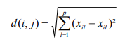
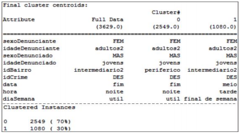
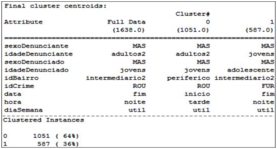
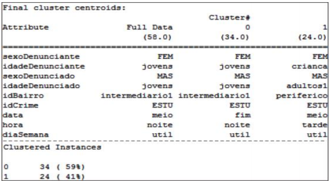
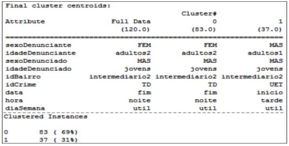

Mineração de Dados Criminais: Um Estudo de Caso no Observatório Criminal do Tapajós
Gabriel Coplas BecherGabriel Rodrigues
INTRODUÇÃO
Mineração de dados X Dados sobre crimes
- Identificar relação de um tipo de crime com algum bairro.
- Determinar a existência de um padrão para a idade, sexo, dia da semana e horário de quem comete determinado tipo de crime.
"...Por meio da ferramenta Weka propõe traçar um perfil das ocorrências que fazem parte de um mesmo agrupamento, encontrando indícios comuns para os crimes cadastrados e mostrando a importância da utilização da mineração de dados no processo de extração do conhecimento a níveis criminais."
FUNDAMENTAÇÃO TEÓRICA
KDD (Knowledge Discovery in Databases)
Um método para extrair conhecimento útil a partir de volume de dados. Esse é um processo global com o objetivo de extrair informações de grandes bancos de dados, utilizando algum procedimento automático (matemático ou computacional).
O processo KDD exige diálogo direto com o conhecimento prévio do pesquisador na tomada de decisão sobre os resultados encontrados pelo método.
Agrupamento (Clusters)
A tarefa de agrupamento implementa algoritmo não supervisionado em que o rótulo da classe de cada amostra de treinamento não é conhecido.
No agrupamento os objetos são incorporados de modo que a semelhança seja máxima dentro de cada cluster e mínima entre instâncias de clusters diferentes.
Algoritmo de Agrupamento K-means (K-médias).
É um algoritmo de partição que busca de forma direta pela divisão ótima (ou aproximadamente ótima) dos n elementos sem a necessidade de associações hierárquicas.
Servem exclusivamente para agrupar os n registros em k clusters.

Distância Euclidiana
Dentre as medidas de distância, a Euclidiana é a mais conhecida. Para calcular a distância entre dois objetos (i e j) com dimensão p (número de variáveis), ela é definida por:
Metodologia
A escolha da base de dados
A escolha da base de dados ocorre a partir dos boletins de ocorrência do 3º Batalhão de Polícia Militar do Estado do Pará cadastrados até o momento em um período de 10 meses (julho de 2013 a abril de 2014) com mais de 5.400 ocorrências.
Pré-processamento e seleção das variáveis mais significativas
A estrutura dessa tabela é baseada em 16 atributos, são eles:
- identificador da ocorrência.
- sexo do denunciante.
- idade do denunciante.
- sexo do denunciado.
- idade do denunciado.
- cidade.
- bairro.
- tipo de crime.
- crime.
- endereço.
- data.
- hora.
- dia da semana.
- tipo de chamada.
- latitude.
- longitude.
- sexo e idade do denunciante e denunciado.
- bairro.
- tipo de crime.
- crime.
- data.
- hora e dia da semana.
A partir dessa etapa atributos foram padronizados para valores categóricos conforme o padrão exigido pela ferramenta Weka. Abaixo são apresentadas as padronizações dos atributos após a fase de pré-processamento:
- Sexo do Denunciante e Denunciado: MAS (Masculino) e FEM (Feminino).
- Idade do Denunciante e Denunciado: Criança (0 a 11 anos), Adolescente (12 a 17 anos), Jovens (18 a 24 anos), Adultos1 (25 a 34 anos), Adultos2 (35 a 64 anos), Idosos (Acima de 65 anos).
- Bairro: Central, Intermediario1 (próximos aos bairros centrais), Intermediário2 (próximos aos bairros Intermediários1) e Periférico (afastados da área central).
- Tipo de Crime: CCP (Crime contra a pessoa) Ex: Ameaça, Agressão e etc., CP (Crimes contra o patrimônio) Ex: Roubo, Furto, etc., CCDS (Crime contra a Dignidade Sexual) Ex: Estrupo, Assédio Sexual e etc., TD (Tráfico de Drogas) Ex: Tráfico, Associação ao tráfico e etc.
- Data: Início (01 a 10), Meio (11 a 20) e Fim (21 a 31) do mês.
- Hora: Manhã (06 às 12), Tarde (13 às 18), Noite (19 às 00) e Madrugada (01 às 05).
- Dia da Semana: Dias úteis (segunda, terça, quarta, quinta e sexta) e finais de semana (sábado e domingo).
- Crimes: Os crimes foram apenas trocados os nomes por siglas para facilitar a identificação. Ex: Ameaça (AME), Furto (FUR), Roubo (ROU) e assim sucessivamente.
Criação do arquivo .Arff
Após a fase de pré-processamento os dados foram exportados para o formato .CSV (separado por vírgula). Foram criados 4 arquivos, um para cada tipo de crime (contra a pessoa, patrimônio, dignidade sexual e tráfico).
SÍNTESE E ANÁLISE DOS RESULTADOS.
Para todos os tipos de crimes separados na metodologia o algoritmo de agrupamento utilizado é o Simple kmeans, acompanhado da função de distância Euclidiana, ambos citados no referencial teórico.
Resultados dos crimes contra a pessoa
O resultado do cluster0 agrupou 70% das ocorrências (2.549) e do cluster1 incorporou os outros 30% (1.080).
O interessante desse resultado é que em ambos os agrupamentos o sexo e idade dos denunciantes e denunciados permaneceram os mesmo, podendo assim dizer que os crimes de desordem (DES) são denunciados por pessoas do sexo feminino de idade entre 35 a 64 anos (adultos2) e que os denunciados são homens de 18 a 24 anos (jovens).
Resultados dos crimes contra o patrimônio.
Resultado dos crimes contra a dignidade sexual.
Resultados dos crimes de tráfico de drogas.
Conclusões
- Muitas instâncias porém poucos atributos e atributos com pouca diversidade.
- Poucos Clusters, dividindo as n instâncias em apenas 2 grupos
- O uso de um algoritmo não supervisionado pode ajudar na percepção de padrões sem influências externas ou preconceitos.
Referências
M. DE MELO, Bruno et al. Mineração de Dados Criminais: Um Estudo de Caso no Observatório Criminal do Tapajós: Criminal Data Mining: A Case Studyin Criminal Observatory Tapajós. 2015. Disponível em: https://ieeexplore.ieee.org/stamp/stamp.jsp?tp=&arnumber=7170397. Acesso em: 10 out. 2018